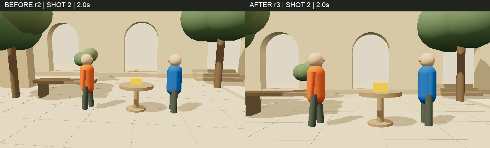

<!doctype html>
<html lang="zh-CN">
  <meta charset="utf-8" /><title>赛博横店 · Codex 镜头迭代</title
  ><style>
    * {
      box-sizing: border-box;
    }
    body {
      margin: 0;
      color: #eaf0dc;
      background: #20251d;
      font-family: 'PingFang SC', 'Hiragino Sans GB', sans-serif;
    }
    main {
      width: 1280px;
      padding: 52px 64px 48px;
    }
    .top {
      font-size: 13px;
      letter-spacing: 2px;
      color: #b4c27e;
      display: flex;
      justify-content: space-between;
    }
    h1 {
      font-size: 42px;
      line-height: 1.4;
      font-weight: 500;
      margin: 25px 0 19px;
    }
    .quote {
      font-size: 21px;
      color: #cad5b0;
      border-left: 3px solid #c4df87;
      padding: 0 0 0 20px;
      margin: 0 0 32px;
      line-height: 1.6;
    }
    .image {
      border: 1px solid #67714f;
      border-radius: 6px;
      overflow: hidden;
    }
    img {
      width: 100%;
      display: block;
    }
    .meta {
      display: grid;
      grid-template-columns: 1fr 1fr;
      gap: 28px;
      margin-top: 19px;
    }
    .meta div {
      padding-top: 14px;
      border-top: 1px solid #49513e;
    }
    .meta b {
      color: #d0e7a0;
      font-size: 17px;
      font-weight: 500;
    }
    .meta p {
      color: #a5ae99;
      font-size: 13px;
      line-height: 1.8;
      margin: 10px 0 0;
    }
    .footer {
      display: flex;
      justify-content: space-between;
      border-top: 1px solid #49513e;
      margin-top: 30px;
      padding-top: 21px;
      font-size: 12px;
      color: #89937e;
    }
  </style>
  <main>
    <div class="top">
      <span>CYBER HENGDIAN / CODEX IN ACTION</span><span>真实模型会话 · 两轮导演</span>
    </div>
    <h1>继续改镜头，不必推倒重来。</h1>
    <div class="quote">
      第二轮导演意图：降低、收紧第二镜头的机位，<br />保留角色、走位与其他镜头。
    </div>
    <div class="image">
      
    </div>
    <div class="meta">
      <div>
        <b>修改前 / r2</b>
        <p>读取现有工程，理解机位与场面关系。<br />同一镜头、同一时刻比较，变化看得见。</p>
      </div>
      <div>
        <b>修改后 / r3</b>
        <p>
          机位更低、构图更紧；角色、动作与其他镜头保留。<br />继续逐帧导出，拍摄决定留在开放工程里。
        </p>
      </div>
    </div>
    <div class="footer">
      <span>来自真实 Codex CLI 案例《午后交接》· SHOT 02 · t=2.0s</span
      ><span>Three.js 预演画面，非 AI 生成成片</span>
    </div>
  </main>
</html>
